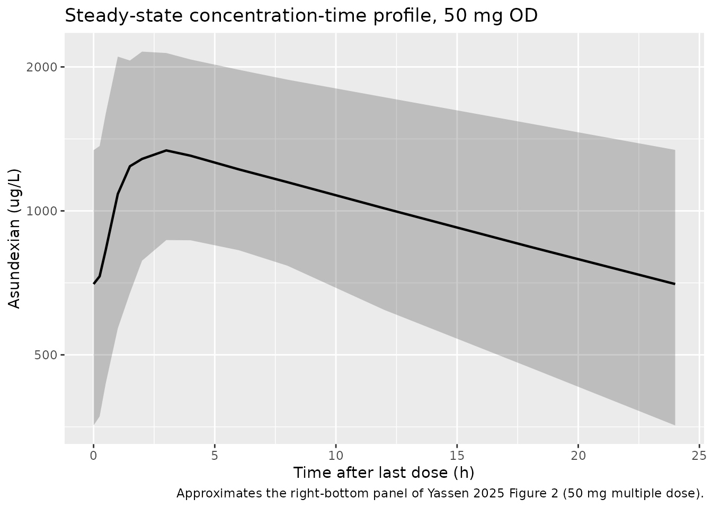
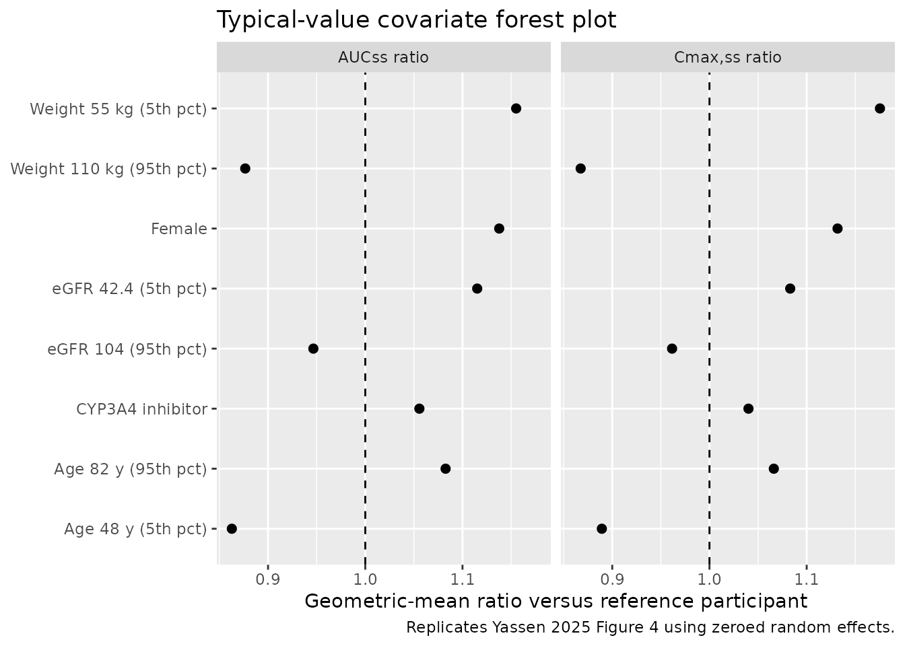

Asundexian (Yassen 2025)
Source:vignettes/articles/Yassen_2025_asundexian.Rmd
Yassen_2025_asundexian.RmdModel and source
- Citation: Yassen A, Kanefendt F, Zisowsky J, Broeker A, Mundl H, Vis P, Garmann D, Berkhout J. Population Pharmacokinetics of Asundexian in People at Risk for Thromboembolic/Cardiovascular Events. CPT Pharmacometrics Syst Pharmacol. 2026;15:e70142. doi:10.1002/psp4.70142
- Description: Two-compartment population PK model with two transit absorption compartments for asundexian, an oral selective Factor XIa inhibitor, in healthy volunteers and adult patients at risk for thromboembolic / cardiovascular events (Yassen 2025)
- Article: https://doi.org/10.1002/psp4.70142
Asundexian is an oral, selective, reversible inhibitor of activated coagulation Factor XI (FXIa), under development for secondary prevention of recurrent ischaemic stroke and other thromboembolic events. The packaged model is the final population PK model from Yassen et al. (2025), fit to 16,599 plasma asundexian concentration observations from 2,914 participants pooled across six Phase I clinical-pharmacology studies and three Phase II studies (PACIFIC-AF, PACIFIC-STROKE, PACIFIC-AMI).
Population
Pooled cohort across nine clinical studies (Yassen 2025 Table 1):
- Phase I clinical pharmacology studies (six trials): healthy adult volunteers enrolled into multiple-dose, age and sex, race (Japanese, Chinese), renal impairment, and hepatic impairment sub-studies. Doses ranged from 25 mg to 100 mg once daily (or twice daily in the multiple-dose study).
- Phase II disease cohorts (three trials):
- PACIFIC-AF (atrial fibrillation, n = 470, ages 46-92 y): 20 or 50 mg OD.
- PACIFIC-STROKE (acute non-cardioembolic ischaemic stroke, n = 1186, ages 45-91 y): 10, 20, or 50 mg OD.
- PACIFIC-AMI (recent acute myocardial infarction, n = 1074, ages 45-90 y): 10, 20, or 50 mg OD.
Pooled baseline summary (Yassen 2025 Tables 2 and 3): age range 21-92 y (median 68), body weight 34.6-178 kg (median 80), CKD-EPI eGFR 13.4-126 mL/min/1.73 m^2 (median 76), 30.8% female. Race composition was 83.3% White, 15.0% Asian, 0.77% Black/African American, and 0.88% Other / not reported. Concomitant CYP3A4 inhibitor coadministration (predominantly weak + moderate) was present in 10.5-69.2% of participants depending on the study.
The same metadata is available programmatically via
readModelDb("Yassen_2025_asundexian")$population.
Source trace
Per-parameter origin is recorded as in-file comments next to every
ini() entry in
inst/modeldb/specificDrugs/Yassen_2025_asundexian.R. The
table below collects them in one place for review.
| Equation / parameter | Value | Source location |
|---|---|---|
lcl (CL/F) |
2.25 L/h | Table 4, structural row “CL/F” |
lvc (Vc/F) |
35.3 L | Table 4, structural row “Vc/F” (Vp/F constrained equal) |
lka (Ka) |
1.87 1/h | Table 4, structural row “Ka” |
lq (Q/F) |
27.4 L/h | Table 4, structural row “Q/F” |
e_age_cl |
-0.426 | Table 4, “Age on CL/F” |
e_wt_cl |
0.396 | Table 4, “Weight on CL/F” |
e_sexf_cl |
-0.121 | Table 4, “Sex on CL/F” |
e_crcl_cl |
0.184 | Table 4, “eGFR on CL/F” |
e_cyp3a4_inh_cl |
-0.0531 | Table 4, “CYP3A4 inhibitors on CL/F” |
e_age_vc |
-0.176 | Table 4, “Age on Vc/F” |
e_wt_vc |
0.754 | Table 4, “Weight on Vc/F” |
e_sexf_vc |
-0.14 | Table 4, “Sex on Vc/F” |
omega^2_CL |
0.0867 | Table 4, derived from CV(CL/F) = 30.1% |
omega^2_Vc |
0.0292 | Table 4, derived from CV(Vc/F) = 17.2% |
omega^2_Ka |
0.2168 | Table 4, derived from CV(Ka) = 49.2% |
cov(CL, Vc) |
0.015 | Table 4, “omega CL/F x Vc/F” |
cov(CL, Ka) |
-0.0385 | Table 4, “omega CL/F x Ka” |
cov(Vc, Ka) |
-0.00496 | Table 4, “omega Vc/F x Ka” |
propSd (sigma) |
0.2488 | Table 4, sigma^2 = 0.0619 (additive on log scale -> proportional in linear space) |
| Reference participant | 79 kg, 68 y, 77 mL/min/1.73 m^2, male | Section 3.2 |
| Two-cmt + 2 transit + 1st-order absorption | structure | Section 3.2 narrative |
Virtual cohort
The original participant-level data are not publicly available. The simulations below build virtual cohorts whose covariate distributions approximate the PACIFIC-STROKE typical participant (the published reference for Table 4) at each dose level reported in Table 5 (10, 20, and 50 mg once daily). Covariates are sampled from log-normal / Bernoulli distributions whose first two moments match Yassen 2025 Tables 2 and 3 for the PACIFIC-STROKE arm.
set.seed(20260508)
n_per_dose <- 200
doses_mg <- c(10, 20, 50)
# Helper: build one steady-state cohort for a given dose level.
make_cohort <- function(n, dose_mg, id_offset = 0L) {
# PACIFIC-STROKE baseline (Yassen 2025 Tables 2-3, n = 1186):
# age 67 +/- 9.6 y, BW 78.8 +/- 16.6 kg, eGFR 79.2 +/- 16.7 mL/min/1.73 m^2,
# 34.7% female, ~76.6% on a CYP3A4 inhibitor (weak/moderate pooled).
age_y <- pmin(pmax(rnorm(n, mean = 67, sd = 9.6), 45), 91)
wt_kg <- pmin(pmax(rnorm(n, mean = 78.8, sd = 16.6), 34.6), 178)
egfr <- pmin(pmax(rnorm(n, mean = 79.2, sd = 16.7), 21), 126)
sexf <- as.integer(runif(n) < 0.347)
cyp3a4_inh <- as.integer(runif(n) < 0.766)
# Dosing schedule: 14 days of once-daily dosing => steady state by day 7.
tau <- 24
n_doses <- 14
dose_times <- (seq_len(n_doses) - 1L) * tau
# Observation grid spanning the final dosing interval at steady state.
obs_grid <- c(seq(0, 24, by = 0.5),
seq(28, 24 * (n_doses - 1), by = 6),
24 * (n_doses - 1),
24 * (n_doses - 1) + c(0.25, 0.5, 1, 1.5, 2, 3, 4, 6, 8, 12, 18, 24))
obs_grid <- sort(unique(obs_grid))
# One row per id x event:
cov_tbl <- tibble::tibble(
id = id_offset + seq_len(n),
AGE = age_y,
WT = wt_kg,
SEXF = sexf,
CRCL = egfr,
CYP3A4_INH = cyp3a4_inh,
treatment = sprintf("%d mg OD", dose_mg)
)
dose_rows <- tidyr::expand_grid(
cov_tbl,
time = dose_times
) |>
dplyr::mutate(evid = 1L, amt = dose_mg, cmt = "depot")
obs_rows <- tidyr::expand_grid(
cov_tbl,
time = obs_grid
) |>
dplyr::mutate(evid = 0L, amt = 0, cmt = "central")
dplyr::bind_rows(dose_rows, obs_rows) |>
dplyr::arrange(id, time, dplyr::desc(evid))
}
events <- dplyr::bind_rows(
make_cohort(n_per_dose, dose_mg = doses_mg[1], id_offset = 0L),
make_cohort(n_per_dose, dose_mg = doses_mg[2], id_offset = n_per_dose),
make_cohort(n_per_dose, dose_mg = doses_mg[3], id_offset = 2L * n_per_dose)
)
stopifnot(!anyDuplicated(unique(events[, c("id", "time", "evid")])))Simulation
mod <- readModelDb("Yassen_2025_asundexian")
sim <- rxode2::rxSolve(
mod, events = events,
keep = c("treatment", "AGE", "WT", "SEXF", "CRCL", "CYP3A4_INH")
) |>
as.data.frame()
#> ℹ parameter labels from comments will be replaced by 'label()'Replicate published figures
Figure 2 (asundexian 50 mg OD multiple-dose VPC)
Yassen 2025 Figure 2 shows a prediction-corrected VPC for 50 mg OD from the healthy-volunteer multiple-dose Phase I study. Below we reproduce the percentile envelope from a stochastic simulation of the 50 mg OD cohort over the final dosing interval at steady state, comparable to the right-most panels of Figure 2.
ss_window <- range(events |> dplyr::filter(treatment == "50 mg OD", evid == 1L) |> dplyr::pull(time))
final_dose_time <- ss_window[2]
ss_end <- final_dose_time + 24
sim_ss <- sim |>
dplyr::filter(treatment == "50 mg OD",
time >= final_dose_time,
time <= ss_end) |>
dplyr::mutate(time_after_last_dose = time - final_dose_time)
ss_summary <- sim_ss |>
dplyr::group_by(time_after_last_dose) |>
dplyr::summarise(
Q05 = quantile(Cc, 0.05, na.rm = TRUE),
Q50 = quantile(Cc, 0.50, na.rm = TRUE),
Q95 = quantile(Cc, 0.95, na.rm = TRUE),
.groups = "drop"
)
ggplot(ss_summary, aes(time_after_last_dose, Q50)) +
geom_ribbon(aes(ymin = Q05, ymax = Q95), alpha = 0.25) +
geom_line(linewidth = 0.8) +
scale_y_log10() +
labs(
x = "Time after last dose (h)",
y = "Asundexian (ug/L)",
title = "Steady-state concentration-time profile, 50 mg OD",
caption = "Approximates the right-bottom panel of Yassen 2025 Figure 2 (50 mg multiple dose)."
)
Figure 4 (forest plot of covariate effects on AUCss and Cmax,ss)
Figure 4 shows the geometric-mean exposure ratio (AUCss and Cmax,ss) versus covariate values around the PACIFIC-STROKE reference participant. The plot below regenerates the typical-value (etas zeroed) ratios for the same covariates the paper highlights: age, body weight, eGFR, sex, and CYP3A4 inhibitor coadministration.
make_typical_subject <- function(AGE, WT, SEXF, CRCL, CYP3A4_INH, label) {
tibble::tibble(
id = 1L, AGE = AGE, WT = WT, SEXF = SEXF, CRCL = CRCL,
CYP3A4_INH = CYP3A4_INH, label = label
)
}
# Reference participant: 68 y, 79 kg, male, eGFR 77, no CYP3A4 inhibitor.
# Perturbations match the 5th / 95th percentiles cited in Yassen 2025 Section 3.3
# (ages 48 / 82 y; eGFR 42.4 / 104; BW 55 / 110 kg).
covariate_grid <- dplyr::bind_rows(
make_typical_subject(68, 79, 0, 77, 0, "Reference"),
make_typical_subject(48, 79, 0, 77, 0, "Age 48 y (5th pct)"),
make_typical_subject(82, 79, 0, 77, 0, "Age 82 y (95th pct)"),
make_typical_subject(68, 55, 0, 77, 0, "Weight 55 kg (5th pct)"),
make_typical_subject(68, 110, 0, 77, 0, "Weight 110 kg (95th pct)"),
make_typical_subject(68, 79, 1, 77, 0, "Female"),
make_typical_subject(68, 79, 0, 42.4, 0, "eGFR 42.4 (5th pct)"),
make_typical_subject(68, 79, 0, 104, 0, "eGFR 104 (95th pct)"),
make_typical_subject(68, 79, 0, 77, 1, "CYP3A4 inhibitor")
)
dose_mg <- 50
tau <- 24
n_doses <- 14
final_t <- (n_doses - 1L) * tau
obs_grid <- c(seq(0, 24, by = 0.5),
seq(28, final_t, by = 6),
final_t + c(0.5, 1, 1.5, 2, 3, 4, 6, 8, 12, 18, 24))
obs_grid <- sort(unique(obs_grid))
build_typical_events <- function(cov_row) {
dose_rows <- tibble::tibble(
id = 1L, AGE = cov_row$AGE, WT = cov_row$WT, SEXF = cov_row$SEXF,
CRCL = cov_row$CRCL, CYP3A4_INH = cov_row$CYP3A4_INH,
time = (seq_len(n_doses) - 1L) * tau,
evid = 1L, amt = dose_mg, cmt = "depot"
)
obs_rows <- tibble::tibble(
id = 1L, AGE = cov_row$AGE, WT = cov_row$WT, SEXF = cov_row$SEXF,
CRCL = cov_row$CRCL, CYP3A4_INH = cov_row$CYP3A4_INH,
time = obs_grid,
evid = 0L, amt = 0, cmt = "central"
)
dplyr::bind_rows(dose_rows, obs_rows) |> dplyr::arrange(time, dplyr::desc(evid))
}
mod_typ <- mod |> rxode2::zeroRe()
#> ℹ parameter labels from comments will be replaced by 'label()'
typical_metrics <- purrr::map_dfr(seq_len(nrow(covariate_grid)), function(i) {
evt <- build_typical_events(covariate_grid[i, ])
s <- as.data.frame(rxode2::rxSolve(mod_typ, events = evt))
ss <- s[s$time >= final_t & s$time <= final_t + tau, ]
dt <- diff(ss$time)
cavg <- sum(0.5 * (head(ss$Cc, -1) + tail(ss$Cc, -1)) * dt)
tibble::tibble(
label = covariate_grid$label[i],
Cmax_ss = max(ss$Cc),
AUC_ss = cavg
)
})
#> ℹ omega/sigma items treated as zero: 'etalcl', 'etalvc', 'etalka'
#> ℹ omega/sigma items treated as zero: 'etalcl', 'etalvc', 'etalka'
#> ℹ omega/sigma items treated as zero: 'etalcl', 'etalvc', 'etalka'
#> ℹ omega/sigma items treated as zero: 'etalcl', 'etalvc', 'etalka'
#> ℹ omega/sigma items treated as zero: 'etalcl', 'etalvc', 'etalka'
#> ℹ omega/sigma items treated as zero: 'etalcl', 'etalvc', 'etalka'
#> ℹ omega/sigma items treated as zero: 'etalcl', 'etalvc', 'etalka'
#> ℹ omega/sigma items treated as zero: 'etalcl', 'etalvc', 'etalka'
#> ℹ omega/sigma items treated as zero: 'etalcl', 'etalvc', 'etalka'
ref_metrics <- typical_metrics |> dplyr::filter(label == "Reference")
forest_df <- typical_metrics |>
dplyr::filter(label != "Reference") |>
dplyr::mutate(
AUC_ratio = AUC_ss / ref_metrics$AUC_ss,
Cmax_ratio = Cmax_ss / ref_metrics$Cmax_ss
)
forest_long <- forest_df |>
dplyr::select(label, AUC_ratio, Cmax_ratio) |>
tidyr::pivot_longer(cols = c(AUC_ratio, Cmax_ratio),
names_to = "metric", values_to = "ratio") |>
dplyr::mutate(
metric = dplyr::recode(metric,
AUC_ratio = "AUCss ratio",
Cmax_ratio = "Cmax,ss ratio")
)
ggplot(forest_long, aes(x = ratio, y = label)) +
geom_vline(xintercept = 1, linetype = "dashed") +
geom_point(size = 2) +
facet_wrap(~ metric) +
labs(
x = "Geometric-mean ratio versus reference participant",
y = NULL,
title = "Typical-value covariate forest plot",
caption = "Replicates Yassen 2025 Figure 4 using zeroed random effects."
)
PKNCA validation
The simulation generates one steady-state dosing-interval profile per virtual participant for each of the 10, 20, and 50 mg OD groups. PKNCA computes Cmax,ss, Tmax,ss, AUCtau,ss, and Ctrough,ss across the final 24 h interval.
# Use the final dosing interval (steady state) for NCA.
n_doses <- 14
tau <- 24
ss_start <- (n_doses - 1L) * tau
ss_end <- ss_start + tau
sim_nca <- sim |>
dplyr::filter(time >= ss_start, time <= ss_end, !is.na(Cc)) |>
dplyr::select(id, time, Cc, treatment)
dose_df <- events |>
dplyr::filter(evid == 1L, time >= ss_start - tau, time <= ss_end) |>
dplyr::group_by(id, treatment) |>
dplyr::filter(time == max(time)) |>
dplyr::ungroup() |>
dplyr::select(id, time, amt, treatment)
conc_obj <- PKNCA::PKNCAconc(
as.data.frame(sim_nca),
Cc ~ time | treatment + id,
concu = "ug/L", timeu = "h"
)
dose_obj <- PKNCA::PKNCAdose(
as.data.frame(dose_df),
amt ~ time | treatment + id,
doseu = "mg"
)
intervals <- data.frame(
start = ss_start,
end = ss_end,
cmax = TRUE,
tmax = TRUE,
cmin = TRUE,
auclast = TRUE,
cav = TRUE
)
nca_data <- PKNCA::PKNCAdata(conc_obj, dose_obj, intervals = intervals)
nca_res <- PKNCA::pk.nca(nca_data)
#> ■■■■■■■■■■■■■■■■ 51% | ETA: 3s
nca_tbl <- as.data.frame(nca_res$result) |>
dplyr::filter(PPTESTCD %in% c("cmax", "tmax", "cmin", "auclast")) |>
dplyr::group_by(treatment, PPTESTCD) |>
dplyr::summarise(
geomean = exp(mean(log(pmax(PPORRES, 1e-3)))),
.groups = "drop"
) |>
tidyr::pivot_wider(names_from = PPTESTCD, values_from = geomean) |>
dplyr::rename(
`Cmax,ss (ug/L)` = cmax,
`Tmax,ss (h)` = tmax,
`Ctrough,ss (ug/L)` = cmin,
`AUCss (ug*h/L)` = auclast
)
knitr::kable(nca_tbl, digits = 2, caption = "Simulated steady-state NCA, PACIFIC-STROKE virtual cohort.")| treatment | AUCss (ug*h/L) | Cmax,ss (ug/L) | Ctrough,ss (ug/L) | Tmax,ss (h) |
|---|---|---|---|---|
| 10 mg OD | 4920.33 | 282.32 | 141.89 | 2.66 |
| 20 mg OD | 9948.79 | 575.34 | 285.13 | 2.56 |
| 50 mg OD | 24355.42 | 1404.38 | 700.34 | 2.56 |
Comparison against Yassen 2025 Table 5 (PACIFIC-STROKE column)
published <- tibble::tibble(
treatment = c("10 mg OD", "20 mg OD", "50 mg OD"),
`AUCss_pub (ug*h/L)` = c( 4923, 9727, 23941),
`Cmax,ss_pub (ug/L)` = c( 282, 559, 1379),
`Ctrough,ss_pub (ug/L)` = c( 141, 277, 680)
)
simulated <- nca_tbl |>
dplyr::transmute(
treatment,
`AUCss_sim (ug*h/L)` = `AUCss (ug*h/L)`,
`Cmax,ss_sim (ug/L)` = `Cmax,ss (ug/L)`,
`Ctrough,ss_sim (ug/L)` = `Ctrough,ss (ug/L)`
)
cmp <- published |>
dplyr::left_join(simulated, by = "treatment") |>
dplyr::mutate(
AUC_pct_diff = 100 * (`AUCss_sim (ug*h/L)` - `AUCss_pub (ug*h/L)`) / `AUCss_pub (ug*h/L)`,
Cmax_pct_diff = 100 * (`Cmax,ss_sim (ug/L)` - `Cmax,ss_pub (ug/L)`) / `Cmax,ss_pub (ug/L)`,
Ctrough_pct_diff = 100 * (`Ctrough,ss_sim (ug/L)` - `Ctrough,ss_pub (ug/L)`) / `Ctrough,ss_pub (ug/L)`
)
knitr::kable(cmp, digits = 1,
caption = "Simulated vs published geometric-mean steady-state NCA (PACIFIC-STROKE).")| treatment | AUCss_pub (ug*h/L) | Cmax,ss_pub (ug/L) | Ctrough,ss_pub (ug/L) | AUCss_sim (ug*h/L) | Cmax,ss_sim (ug/L) | Ctrough,ss_sim (ug/L) | AUC_pct_diff | Cmax_pct_diff | Ctrough_pct_diff |
|---|---|---|---|---|---|---|---|---|---|
| 10 mg OD | 4923 | 282 | 141 | 4920.3 | 282.3 | 141.9 | -0.1 | 0.1 | 0.6 |
| 20 mg OD | 9727 | 559 | 277 | 9948.8 | 575.3 | 285.1 | 2.3 | 2.9 | 2.9 |
| 50 mg OD | 23941 | 1379 | 680 | 24355.4 | 1404.4 | 700.3 | 1.7 | 1.8 | 3.0 |
Comparison against Yassen 2025 Table 5 PACIFIC-STROKE column. Differences are expected to be small (within roughly +/- 20%) because the virtual cohort matches the PACIFIC-STROKE reference participant on the covariates the model identifies as significant (age, body weight, eGFR, sex, CYP3A4-inhibitor coadministration), and dose-proportionality is structural in the linear PK model.
Assumptions and deviations
-
Concomitant CYP3A4 inhibitor pooling. Yassen 2025
reports that 76.6% of PACIFIC-STROKE participants had any concomitant
CYP3A4 inhibitor; the weak / moderate / strong split is reported
separately (Table 3). The simulation samples a single binary
CYP3A4_INHindicator at the pooled 76.6% rate, matching the model’s covariate definition. - Race distribution and ethnicity. Race was tested but not retained as a significant covariate, so the virtual cohort does not stratify by race; predicted exposures therefore correspond to a covariate-matched mix.
- Time-varying covariates held fixed. Body weight, eGFR, age, and CYP3A4 inhibitor coadministration are sampled once per virtual subject and held fixed over the 14-day simulation. The published model permits time-varying values; the validation only checks steady-state geometric-mean exposures, so the simplification does not affect the comparison.
-
Vp/F = Vc/F constraint. The published model fixes
Vp/F = Vc/F to address overparameterisation from imbalanced sampling
across studies; this constraint is reproduced verbatim in the model file
(
vp <- vc). -
Residual error encoding. NONMEM “additive on log
scale” with sigma^2 = 0.0619 maps to nlmixr2’s
Cc ~ prop(propSd)with propSd = sqrt(0.0619) ~ 0.2488 in the linear-concentration space. -
CYP3A4_INH canonical proposal. The covariate column
CYP3A4_INHis proposed in this extraction as a new canonical for binary CYP3A4-inhibitor coadministration; seeinst/references/covariate-columns.md. -
New canonical naming. The simulation uses
CRCLfor CKD-EPI eGFR (canonical name ininst/references/covariate-columns.md); the source paper labels the column asEGFR.